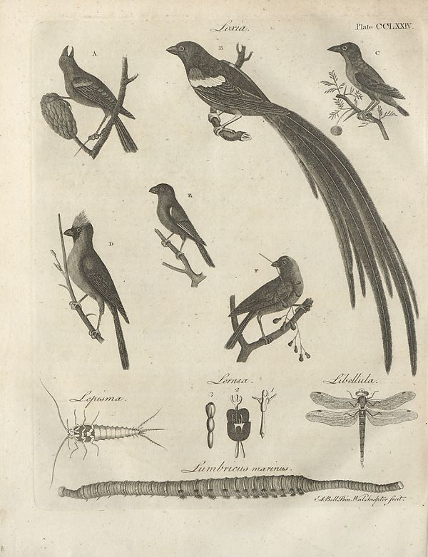

Source · scan and Parse blocks
Layers 1

Parse text by block reading order
- 0PictureLava. Plate CCLXXIV.
Provenance page_id, checksum, Parse model
- page_id
- britannica:309f765b1ecc83e0a7f7762e44b4a927a7555443:train:948
- sha256
- 7daaf1d3d872629a521dadf0381158556417d41f436b00ed4fbd44d78123473c
- Parse
- nvidia/nemotron-3.5-parse · finish stop